One July week in Friesland, the lake country of the northern Netherlands. A waterfront house for all eight of us in the village of Gaastmeer, with a traditional Frisian sailing boat tied up at our own jetty from Monday to Friday.
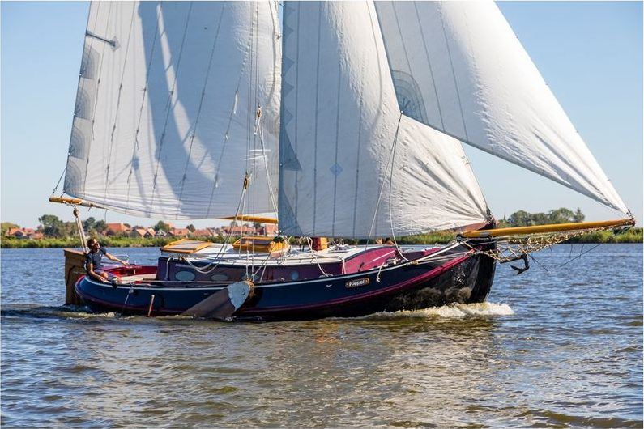
A detached holiday house on the edge of Gaastmeer, a village of a few hundred people on the Fluessen and Gaastmeer lakes in the south-west corner of Friesland. Three bedrooms with two double beds and two sets of bunks, plus a sofa bed, so all eight fit. A south-facing terrace and lawn run straight down to the water, with a private jetty where the boat will live.
Dishwasher, big windows, a deck with a parasol and a table for eight, and sailing-club masts across the water. This is home every night for whoever is not sleeping aboard. Two sister houses on the same water, Morra Wieltje and It Fliet, are the backups if Ringwiel is taken.
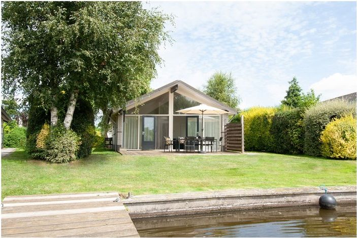
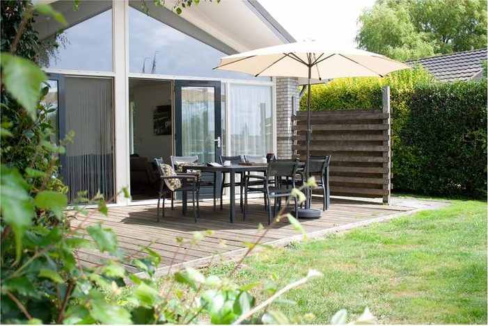
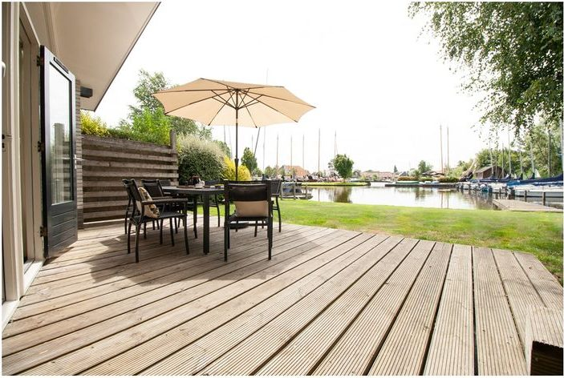
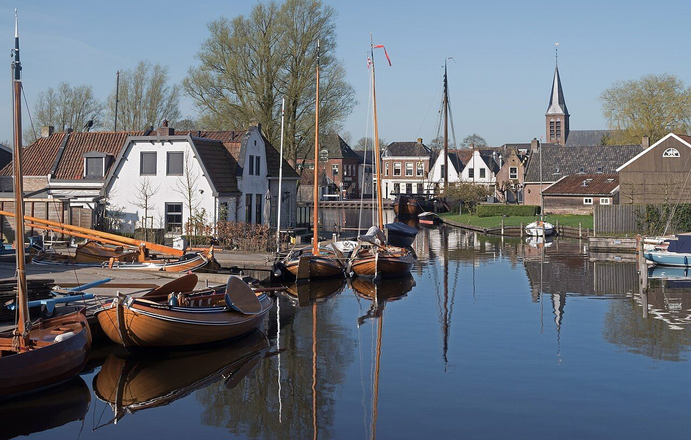
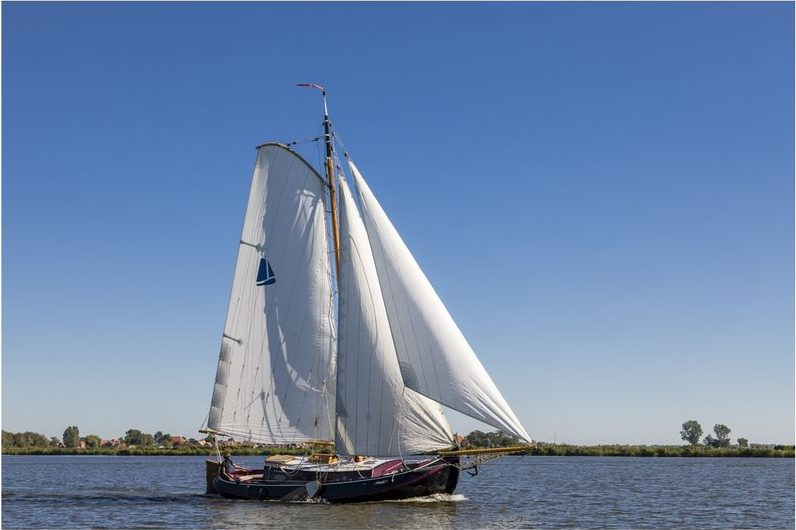
A lemsteraak is the classic Frisian flat-bottomed sailing boat, with wooden leeboards instead of a keel and a gaff rig that was designed for the old Zuiderzee. Riepel is ten metres long and sleeps seven: five fixed berths under the foredeck and two in the deckhouse. Galley, toilet, bow thruster, engine for when the wind quits.
No licence is needed on a boat this size, and we sail her ourselves with no skipper. Handover is at Gaastmeer on Monday afternoon, the same day we get the house keys, and she goes back Friday morning. Her sister ship, the zeeschouw Breesan, is the fallback.
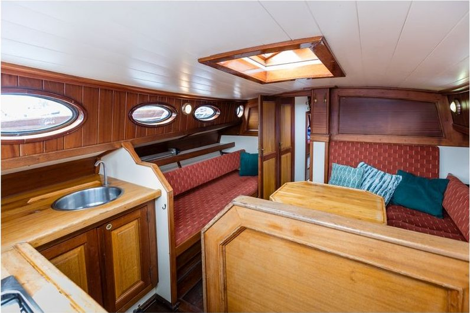
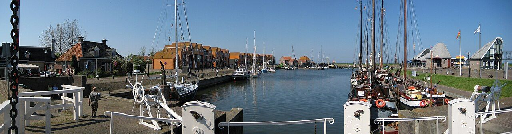
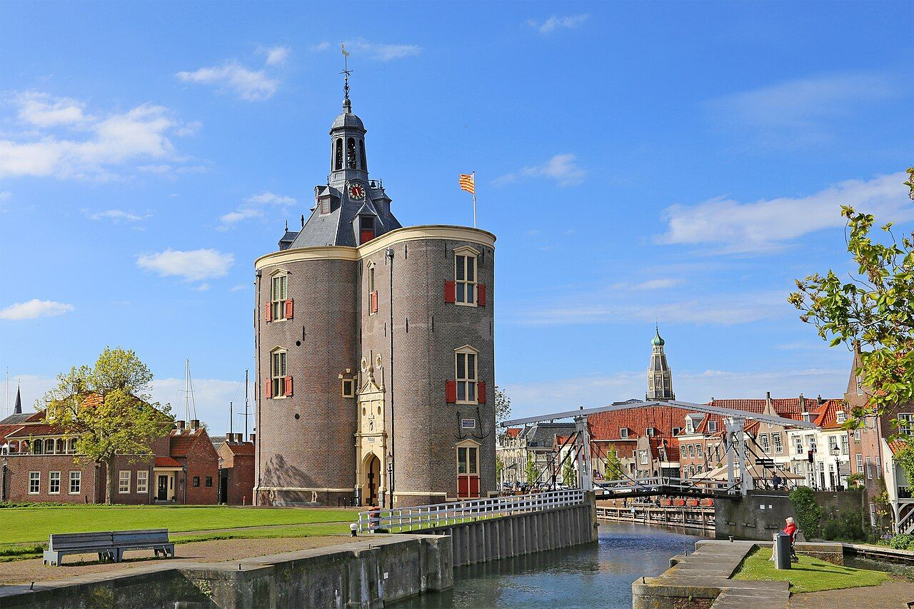
Fly in, drive north. House keys at 4, boat at the jetty by evening
Crew sails to Stavoren. Shore party settles in
Crew crosses to Enkhuizen, night there. Shore party: spa day
Crew sails home to the jetty, dinner all together
Boat back by 10. Afternoon at the beach
Day trip together, everyone ashore
Bikes, a swim off the jetty, last evening on the terrace
Keys back by 10:30, drive to Schiphol
A real voyage for the crew of two adults and four kids: down the lakes and the Johan Frisokanaal to the old Zuiderzee port of Stavoren, through the sea lock, then a crossing of open water to Enkhuizen on the far shore. Lemsteraaks were built for exactly this stretch of water, and Syperda's boats are cleared for the IJsselmeer and the Wadden Sea.
About three hours through the Fluessen and the canal to the harbour town at the edge of the IJsselmeer. Beach at Vrouwezand, fish on the quay, early night aboard.
Through the lock and roughly 20 km of open water, three to four hours with a fair wind. Tie up in the Buitenhaven under the Drommedaris tower and spend the evening in one of the best-preserved towns on the old Zuiderzee.
Sleep aboard in the harbour. Morning at the Zuiderzeemuseum, an open-air village of rescued houses reached by boat, before casting off.
Cross back to Stavoren and carry on up the canal to Gaastmeer, a long but easy day with the engine as backup. If the wind says no, the night is Stavoren and the run home is first thing Friday.
In a hard blow the IJsselmeer stays closed to us, and the same days become Heeg, Woudsend and Sloten on sheltered water.
The shore party can ride the Stavoren to Enkhuizen foot ferry on Wednesday, meet the crew for lunch, and take the ferry back.
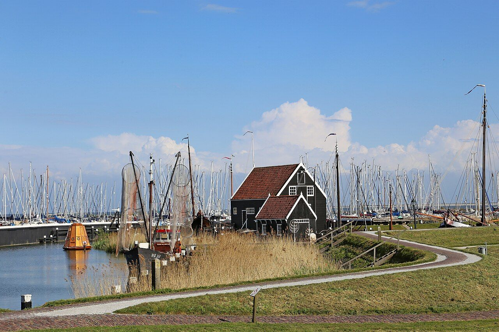
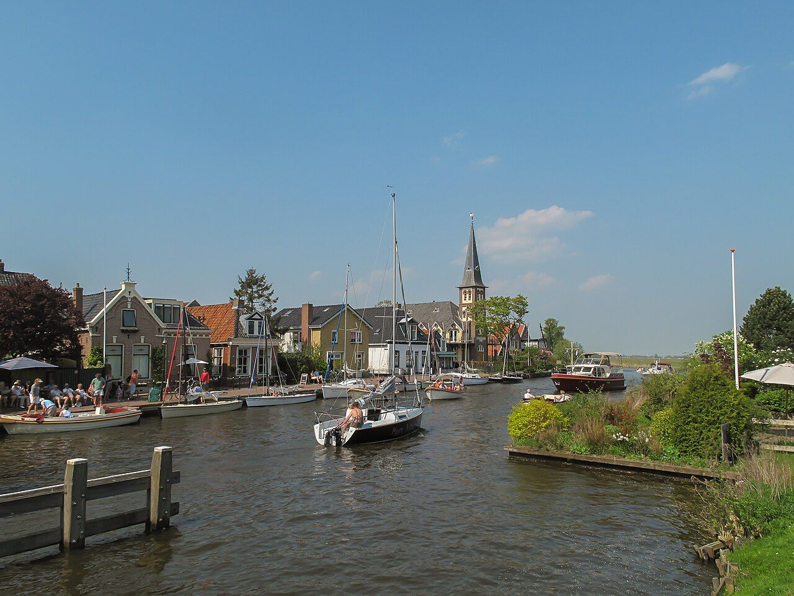
Friesland does the Dutch sauna culture properly: thermal pools, a sauna garden, hamam rituals, and a massage and facial menu. The closest and best is about half an hour from the house, so a spa day fits easily between breakfast on the terrace and dinner with the returning sailors.
The region's big wellness resort. Finnish, herbal, salt-stone, Turkish steam and a panoramic kota sauna, a hamam ritual, indoor and outdoor pools, massages, and a beauty institute for facials and combination treatments. There is a hotel on site if a night away appeals.
A farmhouse sauna in the Frisian woods. Finnish and salt-stone saunas, herbal bath, hammam, massages, body and facial treatments, and a restaurant for a long lunch.
Saunas plus a warm salt-water bath fed by its own underground spring. Massages, and a bed and breakfast attached. Smaller and calmer than the big resorts.
Friesland's first hammam, with sauna, whirlpool and a menu of scrubs and detox treatments. Good for a half day with the traditional soap-and-steam ritual.
Good to know: most Dutch saunas are swimwear-free by default, and the bigger ones run one or two swimwear days a week. Check the calendar when booking treatments, and book massages ahead for July.
Nearly everything is within half an hour. The eleven old Frisian cities are tiny, pretty and close together, the coast is twenty minutes west, and the bikes-and-boats network means the kids can get around on their own.
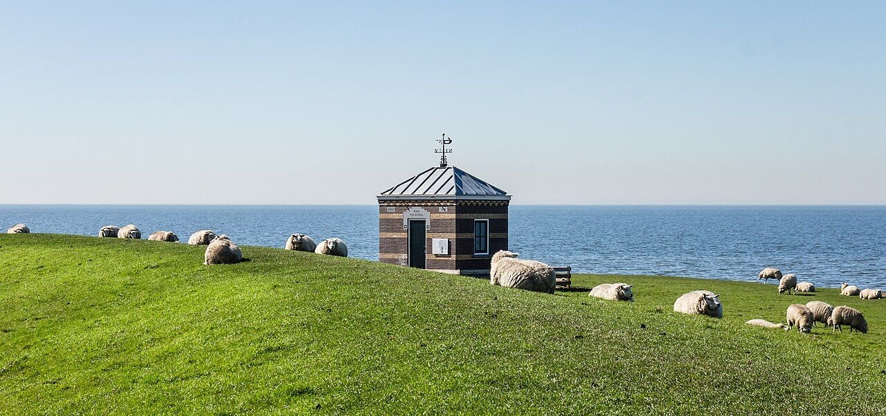
Hand-painted furniture, a harbour behind the sea wall, and the ice-skating museum that tells the story of the Elfstedentocht, the eleven-cities skating race.
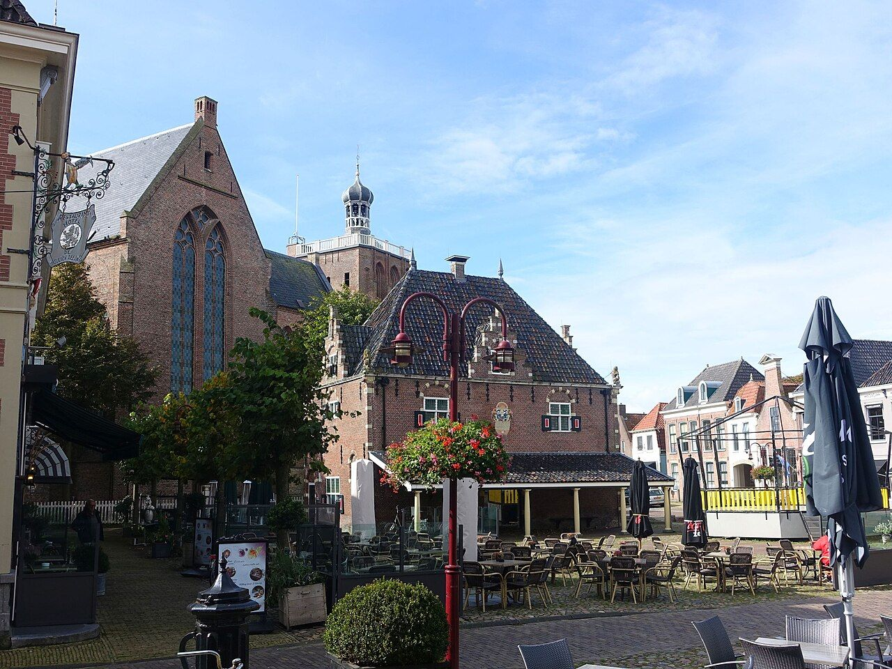
A rag-and-bone man who painted worn-out shoes and old coats with astonishing tenderness. Open daily 11 to 5 in summer. Pair it with coffee on the square.
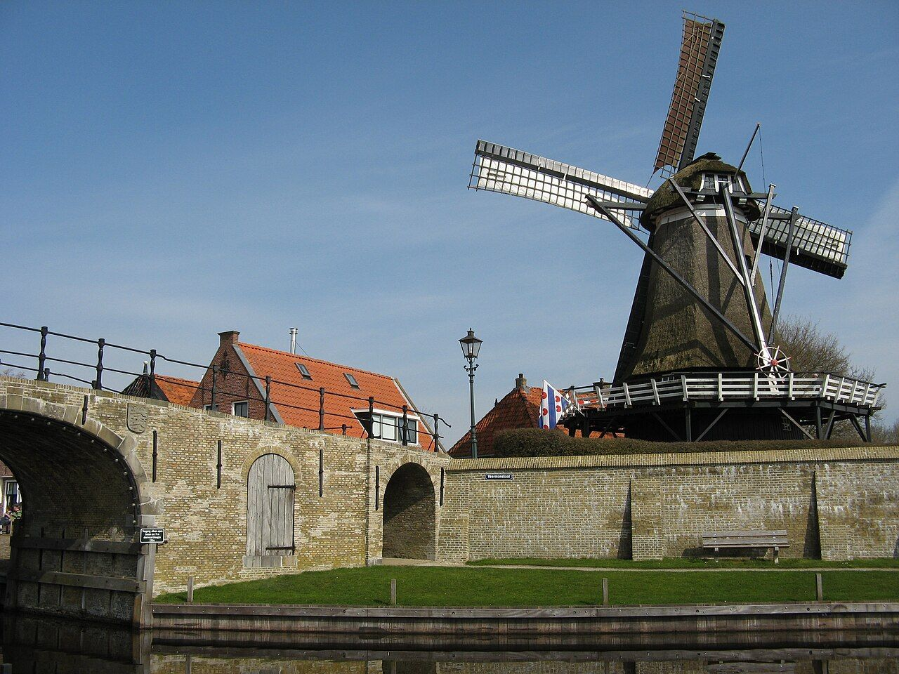
A fortified town the size of a village: one canal, one windmill, lime trees along the water. Reachable by boat as well as by car.
IJsselmeer harbour with a sandy beach at Vrouwezand. A foot-and-bike ferry crosses to Enkhuizen, so the shore party can meet the crew there for lunch on Wednesday and ride back.
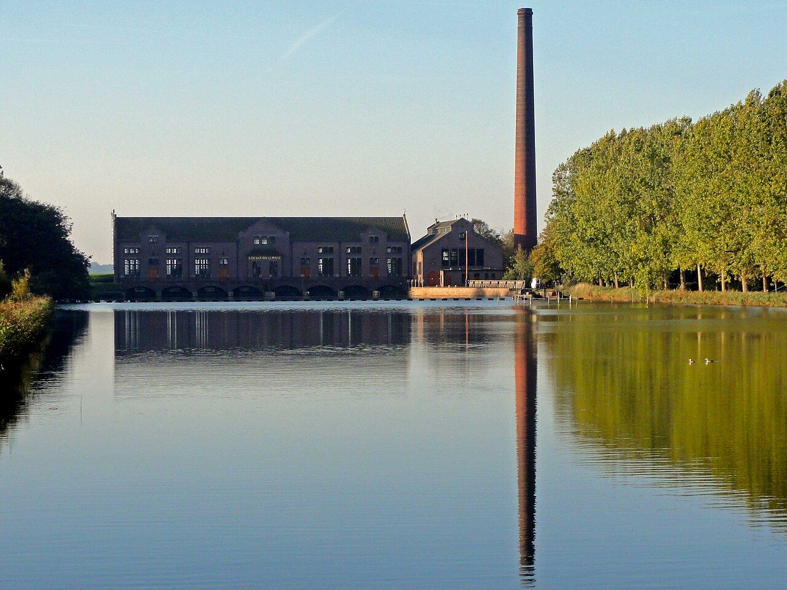
The largest working steam pumping station in the world, a UNESCO site that still fires up when the water gets too high. Open Tuesday to Sunday.
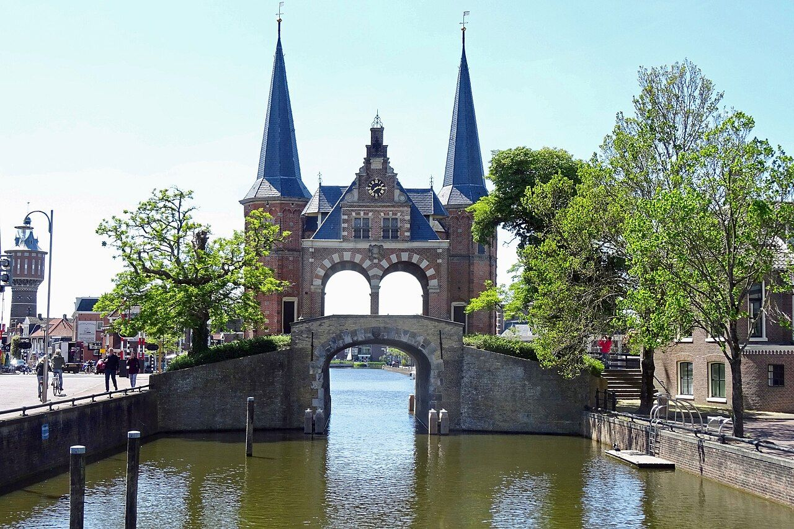
The town gate on the water is the postcard of Friesland. The Fries Scheepvaart Museum covers the boats we will be sailing. Best shopping in the area.
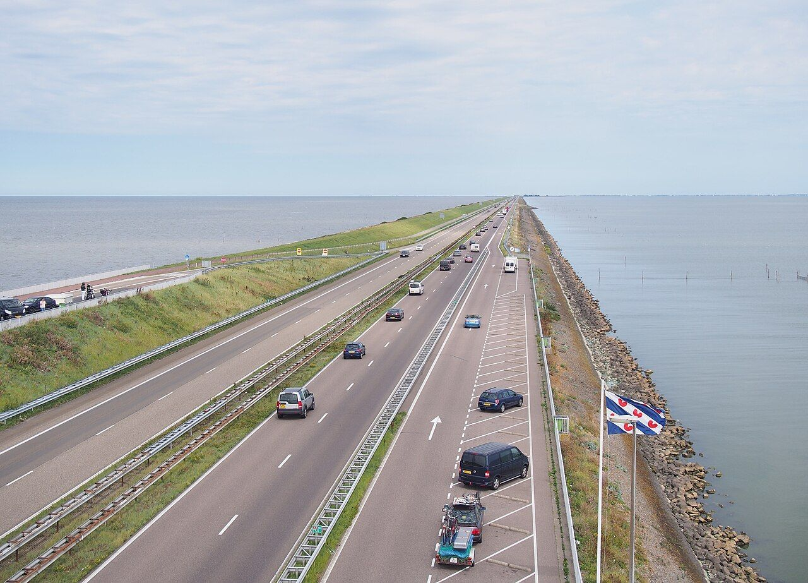
Wide sandy beach at Makkum, then a drive out onto the 32 km dike that closed off the sea in 1932, with the Wadden on one side and the IJsselmeer on the other.
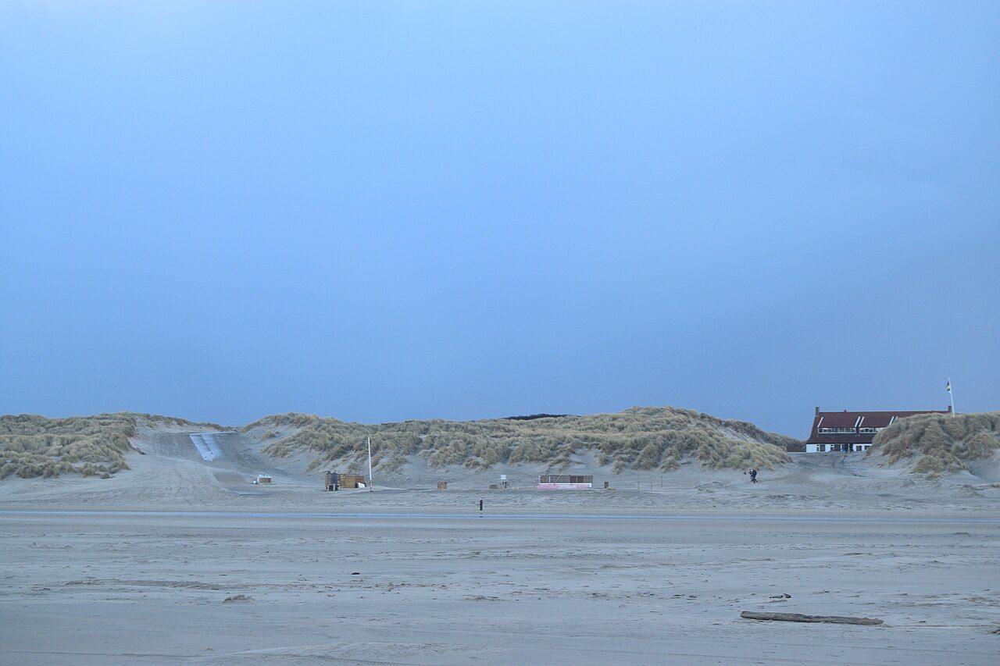
Fast ferries to Terschelling and Vlieland, car-free Wadden islands with dune beaches. A long day, or an overnight for the shore party.
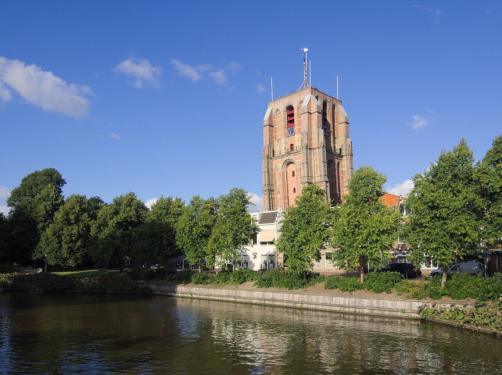
City day with a leaning tower, canals, Aqua Zoo and the Natuurmuseum Fryslân for the kids.
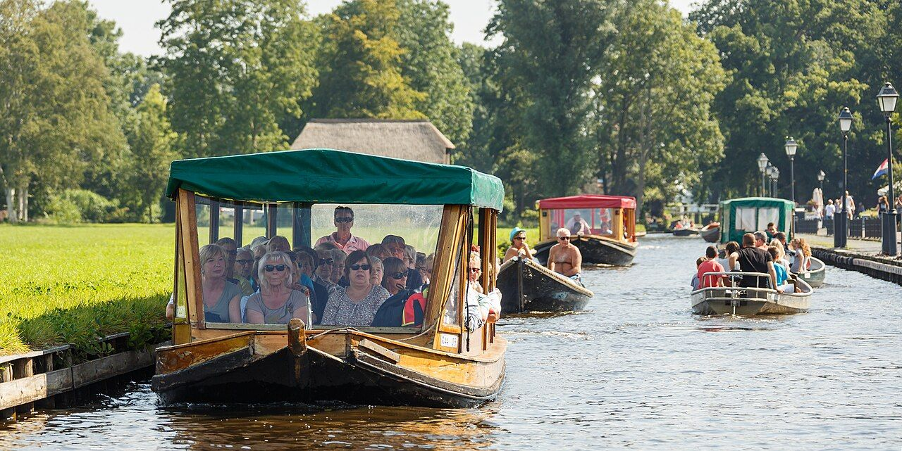
Thatched farmhouses on canals, punts instead of cars. Far enough that it deserves its own day, probably with everyone ashore.
Old-fashioned family play park in the woods behind the Gaasterland hills, ten minutes from the house. The easy answer on a cloudy morning.
Flat, signed cycle routes link all eleven cities. The numbered junction network makes a half-day loop simple to plan from the house.
Check-in Monday from 4 pm, check-out the following Monday by 10:30. Bed and bath linen can be rented from Syperda or brought along. No pets or smoking in Ringwiel.
Handover Monday from 3 pm, return Friday morning by 10. Bedding is a sleeping bag or duvet of your own; fitted sheets and pillows are aboard. Sailing area covers the Frisian lakes, the IJsselmeer and the Wadden Sea.
Fly into Amsterdam Schiphol. Gaastmeer is about an hour and twenty minutes north by car along the A6 and A7, or two hours by train and taxi via Leeuwarden.
Three bedrooms in the house, seven berths on the boat. Tuesday night the crew of six sleeps aboard in Stavoren and Wednesday night in Enkhuizen. Every other night everyone is home.
Waterrecreatie Syperda, Munkedyk 2, Gaastmeer. House and boat come from the same family firm, one booking, one handover.
Mid-July in Friesland means long light until after ten at night, water warm enough to swim, and a sailing breeze most afternoons. Bring a rain layer anyway.